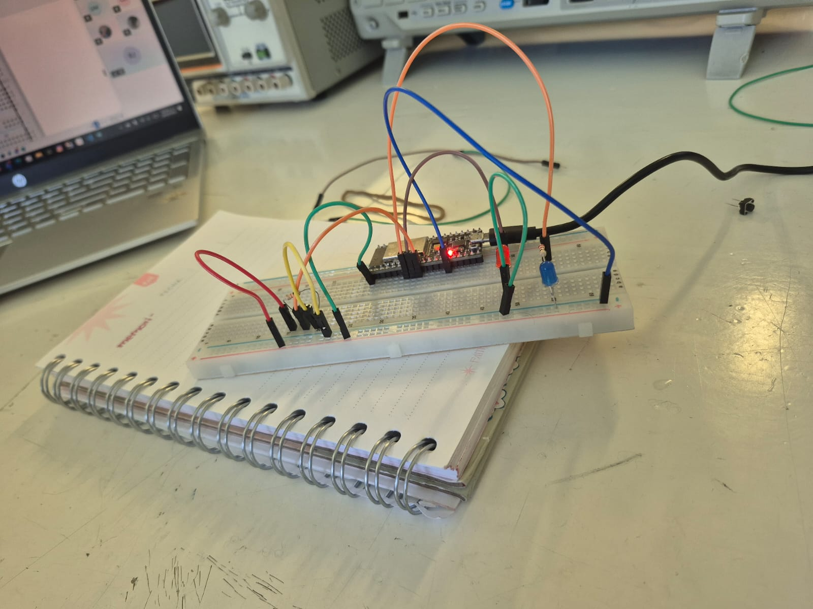
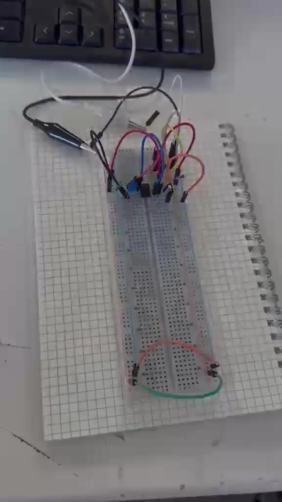
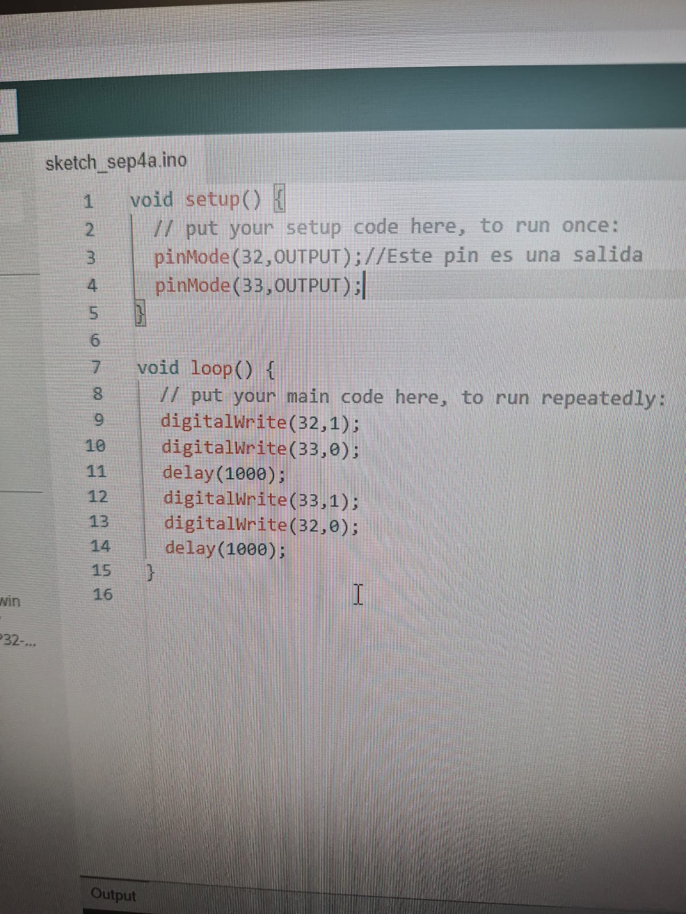
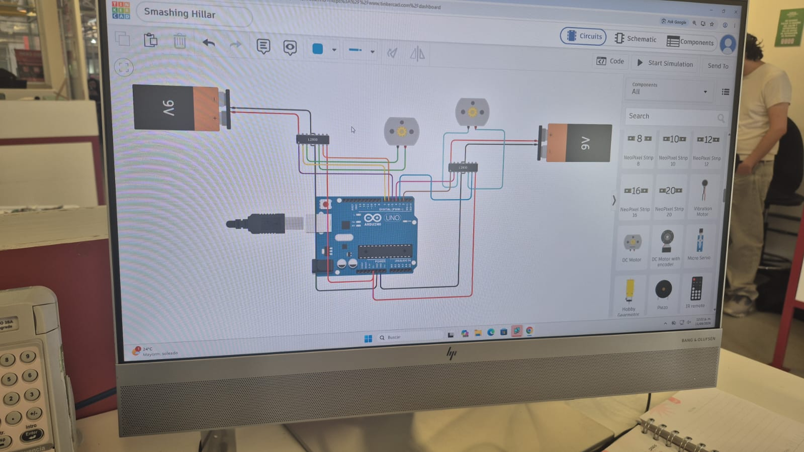
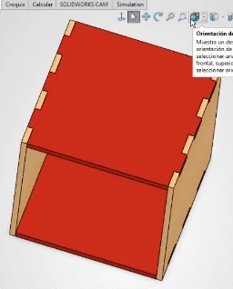

Materias y prácticas
Índice completo de materias y prácticas documentadas. Usa el filtro para encontrar una práctica por nombre, materia o herramienta.
Materias
2 materias · 8 prácticas registradas

Introducción a la Mecatrónica Electrónica básica, programación de microcontroladores, entradas y salidas digitales y control de motores. 5 prácticas Proyecto de Mecatrónica
Prácticas realizadas en SOLIDWORKS y en el taller de soldadura, del diseño de piezas a su fabricación.
3 prácticas
Proyecto de Mecatrónica
Prácticas realizadas en SOLIDWORKS y en el taller de soldadura, del diseño de piezas a su fabricación.
3 prácticas
Todas las prácticas
Índice completo, ordenado por materia y número

Práctica 01 Introducción a la electrónica Introducción a la Mecatrónica Práctica 02
Bases de programación con Arduino
Introducción a la Mecatrónica
Práctica 02
Bases de programación con Arduino
Introducción a la Mecatrónica

Práctica 03 Entradas digitales con ESP32 Introducción a la Mecatrónica
Práctica 04 Control de un motor en Tinkercad Introducción a la Mecatrónica Práctica 05 Circuito físico con ESP32 Introducción a la Mecatrónica
Práctica 01
Introducción al modelado en SOLIDWORKS
Proyecto de Mecatrónica
 Práctica 02
Trabajo en el área de soldadura
Proyecto de Mecatrónica
Práctica 02
Trabajo en el área de soldadura
Proyecto de Mecatrónica

Práctica 03 Diseño de un cubo ensamblable en SOLIDWORKS Proyecto de MecatrónicaNo hay prácticas que coincidan con el filtro.